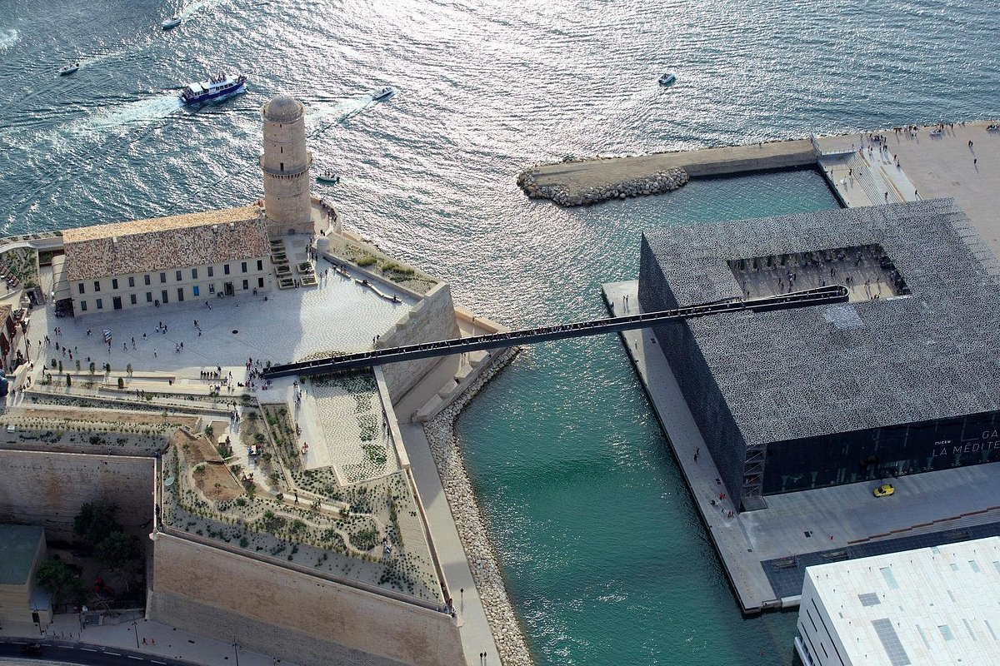
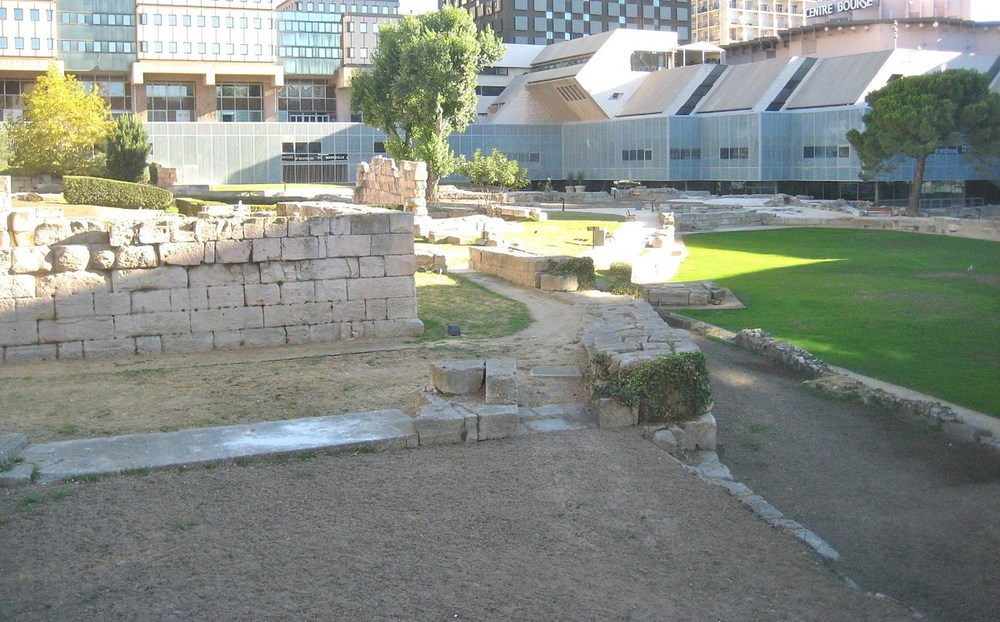
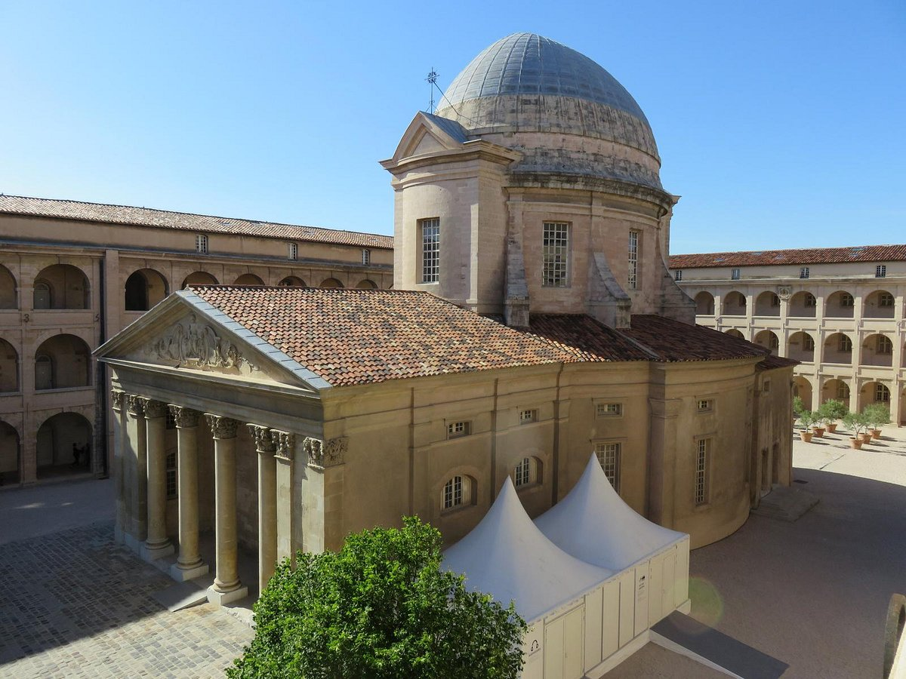
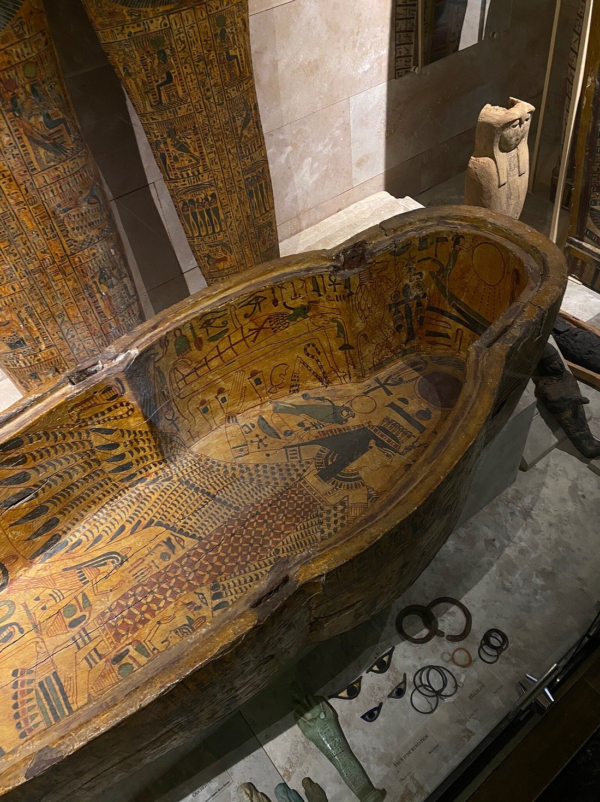
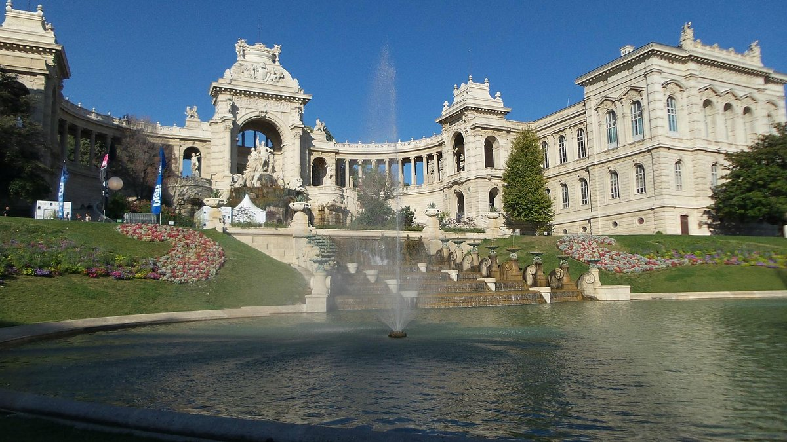
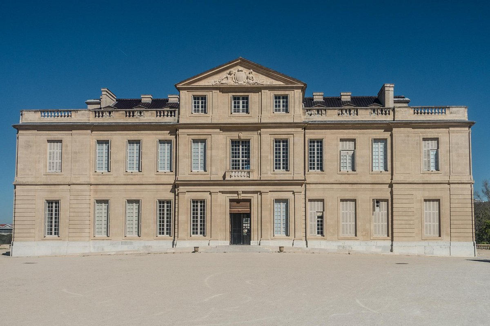
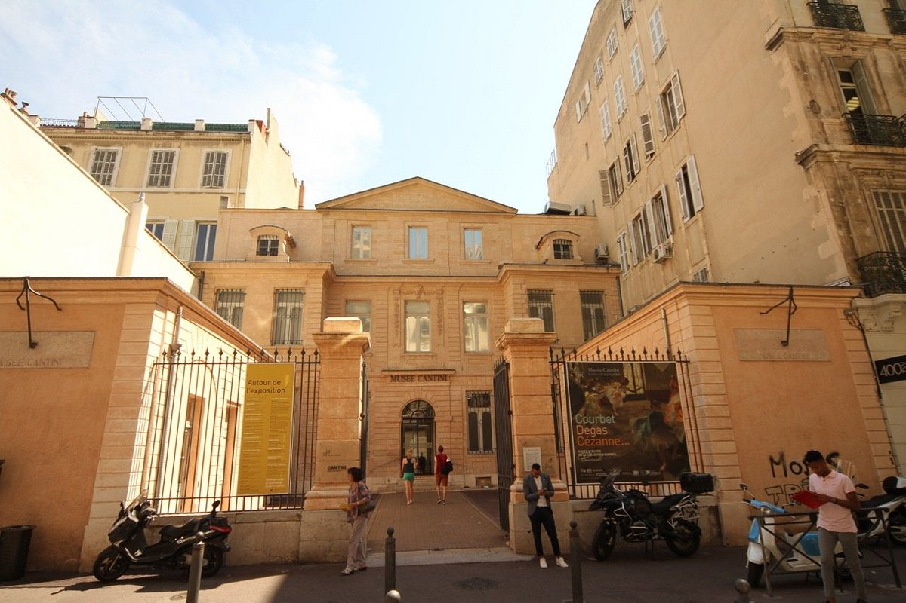
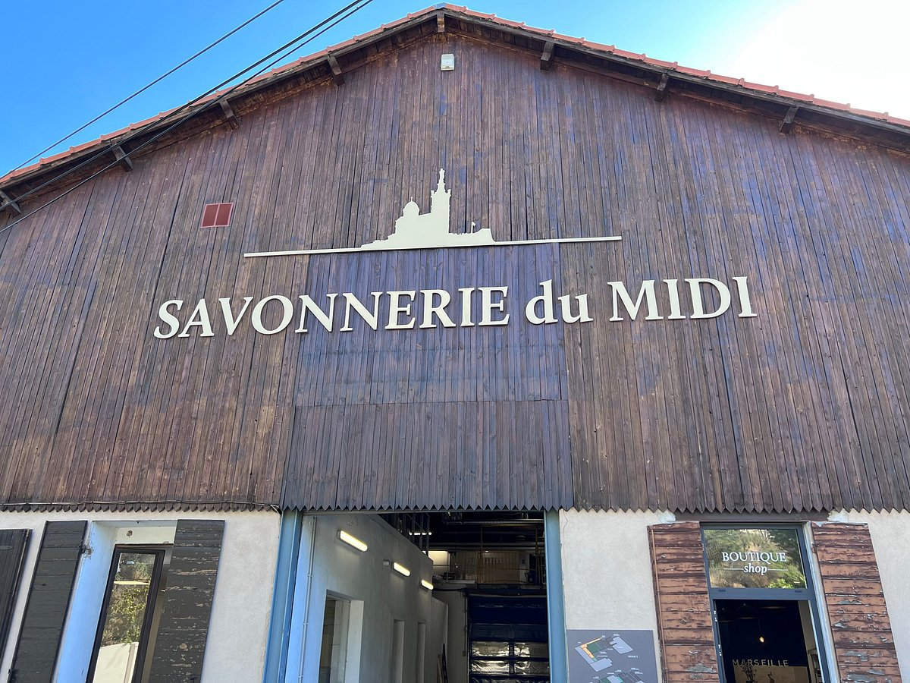
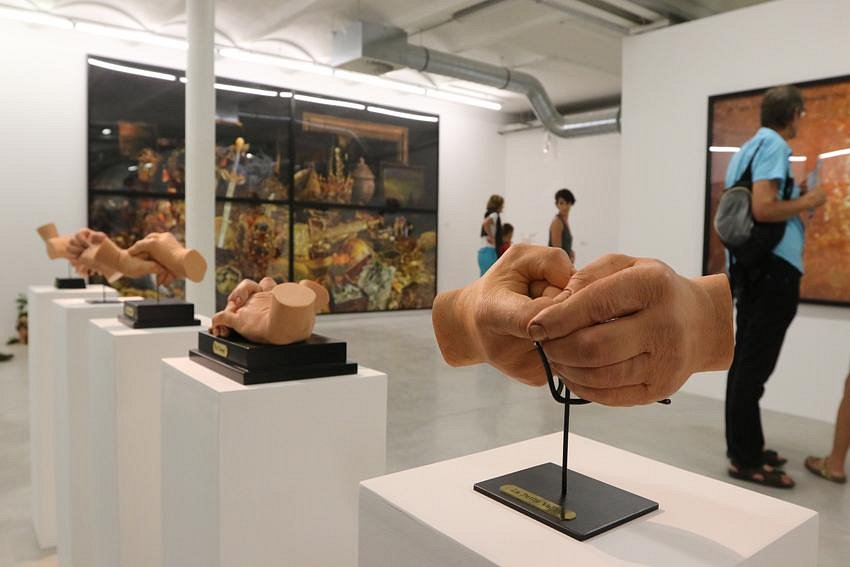

Musées à Marseille
Les voyageurs visitent la ville portuaire de Marseille, la troisième ville de France, pour son mélange de style et de tradition. La baie, entourée par le fort Saint-Nicolas et le fort Saint-Jean abrite le château d'If, connu grâce au Comte de Monte-Cristo. Dominées par la basilique Notre-Dame-de-la-Garde, les zones piétonnes et commerçantes de la ville (y compris le quartier franco-africain) se mêlent aux sites historiques. Les voyageurs en quête de divertissement peuvent aller au OK Corral, parc d'attractions sur le thème des cowboys.
Mucem
À Marseille, le Mucem s’affirme comme le grand musée consacré à la Méditerranée. La singularité du Mucem est de retracer, d’analyser et d’éclairer, dans un même élan et un même lieu, les antiques fondations de ce bassin de civilisation, et les tensions qui le traversent jusqu’à l’époque contemporaine. D’être un lieu d’échange autour des enjeux méditerranéens.
Musée d'histoire de Marseille
Un musée où vous verrez la plus vieille épave d'un bateau romain mais aussi d'autres objets de l'antiquité à nos jours dans un parcours chronologique, pédagogique et ludique pour ceux qui visitent avec leurs enfants ou petits enfants. Ce musée a la particularité d'être situé dans un centre commercial dont le parking voiture n'est pas donné mais qui est accessible en tramway ou en métro si l'on veut utiliser les transports en commun. Par les baies vitrées ou en rentrant côté Vieux Port vous apercevrez le jardin des vestiges qui a été amélioré et peut être visiter.
Centre de la Vieille Charite
En plein quartier du panier un ancien hospice avec sa petite basilique baroque au centre. Musée avec une expo permanente et quelques expo temporaires. 2 belles ailes très bien restaurées strictement tournées vers sa basilique. À voir Superbe batiment très bien renové, au coeur du quartier du Panier. Musée et Expos temporaires dans les étages . Nous avons profité d'une expo photo dans les galeries . Très sympa. Ancien hospice construit au 17e siecle (sur les vestiges des premieres implantations grecques de Massilia) avec une chapelle au toit coupole ovoide étonnant. Ca ne devait pas etre drole d'etre enfermé la dedans à l'epoque,car les batiments sont bien austères.Pierre Puget ( 1620-1694) , marseillais de naissance et de grand cœur , architecte du Roi , décide de réaliser en 1670 , un hospice pour accueillir les pauvres et les gueux de Marseille car comme il dit " Dieu sait s'il y en a !! Il construit l' édifice que l'on voit en arrivant , au milieu du quartier pauvre du Panier , selon un modèle militaire avec le soucis de sa fonctionnalité . Le bâtiment d'enceinte est sur 2 niveaux au dessus du sol avec des grandes galeries à voutes de plein cintre , qui donnent sur la grande cour intérieure . Aucune ouverture n'est réalisée vers l'extérieur , ce qui lui donne une allure de prison . Au centre , l'esprit religieux de son concepteur , construit une chapelle de style baroque assez
Musée d’Archéologie Méditerranéenne
Située dans l'entrée du Quartier du Panier en arrivant parla Cathédrale de la Major, cette bâtisse ne passe pas inaperçue et l'on a envie d'en savoir plus lorsque l'on voit que l'on peut y entrer. De nombreuses salles à visiter. Des expositions magnifiques sur l'histoire des civilisations Africaines, Océaniques, Mexicaines, ... et Egyptiennes. La salle concernant l'exposition égyptiennes est fascinante pour qui aime cette partie de l'histoire : des sarcophages, des momies d'animaux, des tablettes d'écritures, ... De plus, beaucoup de salles peuvent être visitées gratuitement, ce qui est très rare de nos jours. C'est l'enfant du pays , architecte du Roi , Pierre Puget (1620-1694) qui en 1670 , entame cette réalisation , qui est tout à son honneur . Par la suite , Hospice pour vieillards puis détourné de sa fonction , elle tombe en ruine . C'est en 1961 que la ville prend en charge sa restauration . Aujourd'hui , ce bel édifice fait de pierre blanche et rose , est un espace culturel où se déroulent des expositions .
Musée Des Beaux Arts
Musée agréable avec quelques tableaux majeurs (Corot, Ziem, ...) mais je m'attendais à découvrir des "petits maîtres provençaux " comme Camoin, Olive, ... et ce fut la déception même si quelques jolies toiles sont bien présentes. À noter : la nonchalance et une forme de "jmenfoutisme" d'une partie du personnel : personne à l'entrée, vous rentrez comme dans un moulin, gardiens qui dorment avachis sur leur chaise... On ne sait pas s'il faut en rire ou en pleurer ! Un petit musée à 3 étages situé dans le Palais Longchamp avec des collection des peintures superbes, dont la plupart raconte l’histoire de Marseille. Il y a celle qui illustre l’épidémie à l’époque de 17/18ème siècle, et une autre qui montre le Vieux-Port.
Château Borely Marseille
Très belle bâtisse ( " bastide" ) du XVIIIe ayant appartenu à un riche négociant marseillais avec un très beau parc et un café dans lequel vous trouverez de quoi vous restaurer mais aussi des vestiges archéologiques d'époque. Les 2 grands vases à l'entrée ayant été volés fin décembre 2021, celle-ci a perdu un peu de son cachet évidemment... Le musée dispose d'une belle collection de porcelaines du XVIIIe principalement ainsi que des pièces à vivre de la bastide. Actuellement une exposition " Jaune " met en valeur non seulement la couleur mais aussi des pièces de mode.Les collections de faience et porcelaine sont très riches; le bâtiment lui-même a été formidablement restauré. certaines pièces du château ont été remises en état telles qu'elles étaient à l'époque, d'autres ont été rénovées dans un style contemporain mais parfaitement respectueux du site. Le lieu est très calme et dispose d'un petit restaurant.
Musée Cantini
Beau bâtiment ( très jolie façade mais l’intérieur est défiguré), quelques très belles œuvres et d’autres simplement intéressantes, exposition Erwin Wurm encombrante et peu intéressante, le caractère provoquant et grossier de certains éléments discréditent toute l’œuvre de cet homme et en font une insulte à l’art, à la beauté et à l’intelligence humaines, et empêchent de voir cette exposition avec des enfants... ( buste humain avec une bouteille de Campari enfoncée dans le rectum: quelle classe et quel raffinement ultime ; comment se plaindre de ceux qui accusent l’art contemporain d’être dégénéré?). Je conseille d’y aller le premier dimanche du mois car c’est gratuit. Un petit musée mais qui mérite une visite autant pour sa collection permanente que ses expos toujours originales et décoiffantes.Wurm mérite le déplacement mais l'ensemble des oeuvres aurait pu être exposé ici même plutôt que de délocaliser dans deux autres lieux l'expo.
Savonnerie du Midi
Super visite, n'hésitez pas à allez jeter un coup d'œil si vous êtes dans le coin! Nous l'avons visité très récemment tous en famille et c'était très étonnant! On a appris comment fabriquer le vrai savon de Marseille, à reconnaître le vrai savon de Marseille et bien plus! La boutique du musée est charmante, ils y a également un jeu pours les enfants très amusant, et les responsables sont très sympathiques! Très intéressante et super bien guidée, dans un espace musée très riche (on aimerait y rester plus que le temps de la visite guidée pour lire et regarder tout ce qui est montré). La boutique est très sympa et permet de se faire plaisir tout en soutenant une activité ancestrale qu'il faut à tout prix préserver.
Friche la Belle de Mai
Née en 1992, la Friche la Belle de Mai est située au cœur de Marseille, occupant 45 000 m2 d’une ancienne manufacture de tabacs. Éclectique, effervescente, exigeante et ouverte à tous, elle a connu un formidable essor depuis 2013. Ses nouveaux enjeux et son perpétuel développement contribuent à en faire l’un des pôles culturels les plus novateurs en Europe. Espace de travail et plateforme de création, la Friche rassemble plus de 70 structures artistiques et culturelles dans des disciplines aussi variées que les arts visuels, la danse, le théâtre, le cinéma, la musique... Quasiment une ville dans la ville, la Friche traverse les générations et les milieux sociaux, s‘attachant aujourd’hui à proposer des activités artistiques à un très large public (festivals, expositions, spectacles, concerts, rencontres… ) et à être un véritable lieu de vie avec des jardins partagés, un restaurant, une crèche, une librairie, un skate park... et bientôt une trentaine de logements sociaux et étudiants.
